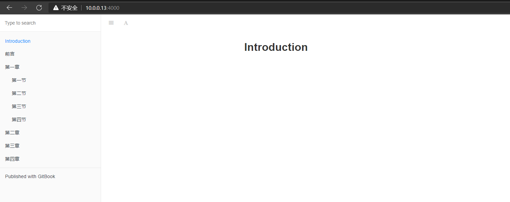
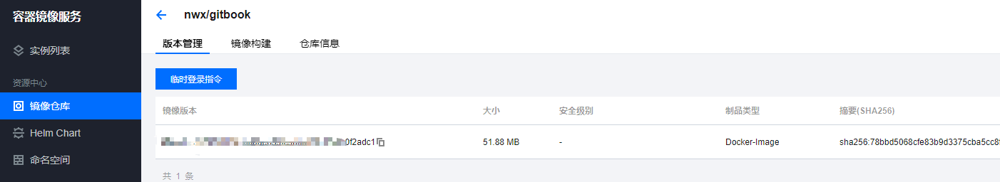
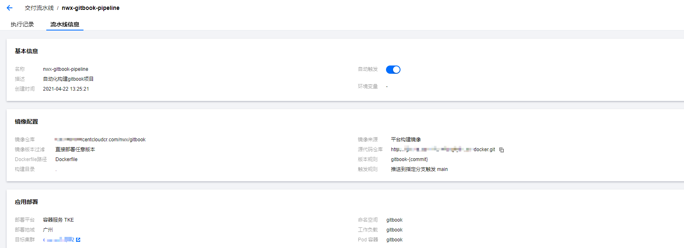
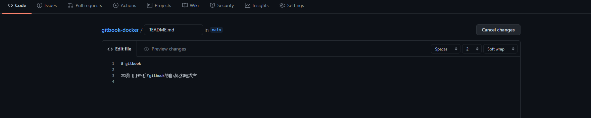
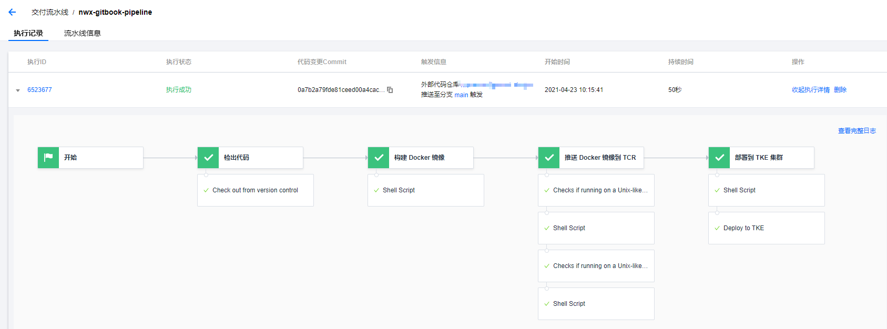
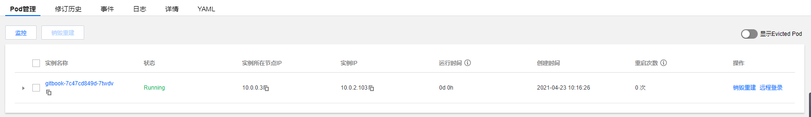
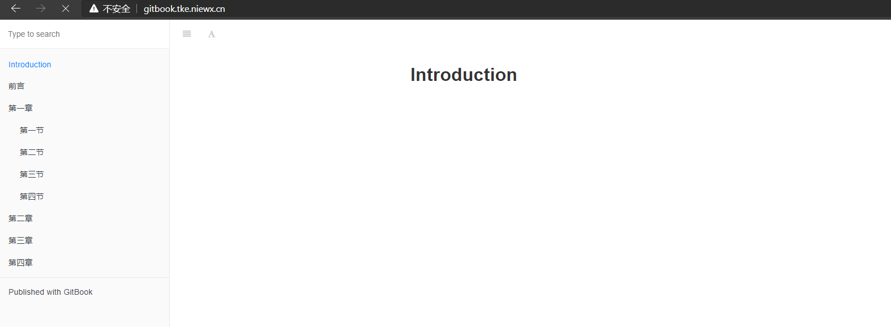

作为一个运维工程，写文档是日常的工作之一，很多时候我们需要将文档分享给其他人，一般都是用现在的在线文档进行分享，其实这里我们也可以gitbook来发布我们的文档，这里可以更加方便的分享给其他人查阅。今天我们来说说如何生成gitbook并部署到k8s上运行我们的gitbook，并提供对应的域名对外提供访问，让其他人可以直接通过域名来访问文档。
环境准备
生成部署gitbook需要上面这些环境，虚拟机也可以用k8s集群中的node节点，这里只是用来本地构建gitbook的markdown文档和推送编译后的html文件到远程git仓库上，k8s环境这里用的是腾讯云的tke集群，域名和github都需要自行申请。
本地安装部署gitbook gitbook是一个基于Node.js的命令行工具，所以要先安装Node.js，安装nodejs默认会安装npm，所以这里不需要安装npm，安装好之后下载下gitbook-cli命令，然后创建一个目录作为gitbook的工作目录
1 2 3 4 5 6 7 8 9 10 11 12 13 14 15 16 [root@ VM-0 -13 -centos ~]# node -v v6.17 .1 [root@ VM-0 -13 -centos ~]# npm -v 3.10 .10 [root@ VM-0 -13 -centos ~]# npm install -g gitbook-cli [root@ VM-0 -13 -centos ~]# mkdir gitbook [root@ VM-0 -13 -centos ~]# cd gitbook [root@ VM-0 -13 -centos ~]# gitbook init warn: no summary file in this book info: create README.md info: create SUMMARY.md info: initialization is finished [root@ VM-0 -13 -centos gitbook]# ll total 8 -rw-r--r-- 1 root root 16 Apr 22 12 :39 README.md -rw-r--r-- 1 root root 40 Apr 22 12 :39 SUMMARY.md
执行init后会生成2个md文件
README.md（书籍的介绍在这个文件里）
SUMMARY.md（书籍的目录结构在这里配置）
下面我们在SUMMRAY.md编写一下目录结构
1 2 3 4 5 6 7 8 9 10 11 12 13 [root@VM-0-13-centos gitbook]# cat SUMMARY.md # Summary * [Introduction ](README.md )* [前言 ](readme.md )* [第一章 ](part1/README.md ) * [第一节 ](part1/1.md ) * [第二节 ](part1/2.md ) * [第三节 ](part1/3.md ) * [第四节 ](part1/4.md )* [第二章 ](part2/README.md )* [第三章 ](part3/README.md )* [第四章 ](part4/README.md )
创建一个part1目录，创建一个README.md来作为第一章的简介
1 2 3 [root@ VM-0 -13 -centos gitbook]# mkdir part1 [root@ VM-0 -13 -centos part1]# cat README.md # 第一章
然后我们本地运行下gitbook
1 2 3 4 5 6 7 8 9 10 11 12 13 14 15 16 17 18 [root@VM-0 -13 -centos gitbook]# gitbook serve & Live reload server started on port: 35729 Press CTRL+C to quit ... info: 7 plugins are installedinfo: loading plugin "livereload" ... OKinfo: loading plugin "highlight" ... OKinfo: loading plugin "search" ... OKinfo: loading plugin "lunr" ... OKinfo: loading plugin "sharing" ... OKinfo: loading plugin "fontsettings" ... OKinfo: loading plugin "theme-default" ... OKinfo: found 1 pagesinfo: found 0 asset filesinfo: >> generation finished with success in 1.4 s !Starting server ... Serving book on http:

运行gitbook后，可以通过服务器ip和4000端口访问，如果后面我们有更新gitbook目录下的markdown文档，gitbook会自动同步并生成静态文件在_book目录下。
代码上传到github 这里我们如果要自动化部署可以将gitbook生成的静态文件上传到github，然后构建成docker镜像，最终部署到k8s集群中。
1 2 3 4 5 [root@ VM-0 -13 -centos gitbook-docker]# ll total 12 -rw-r--r-- 1 root root 87 Apr 22 13 :12 Dockerfile drwxr-xr-x 4 root root 4096 Apr 22 13 :11 gitbook -rw-r--r-- 1 root root 17 Apr 22 13 :07 README.md
这里的github代码仓库目录结构如下，gitbook存放生成的静态文件，Dokcerfile用来构建docker镜像，具体代码如下，README.md文件说明代码仓库的作用。
1 2 3 4 5 [root@VM-0 -13 -centos gitbook-docker] FROM nginxWORKDIR /usr/share/nginx/html ADD ./gitbook /usr/share/nginx/html EXPOSE 80
我们直接用一个nginx将gitbook生成的静态文件展示，我们将gitbook-docker的代码push到远程仓库即可，后续更新代码只需要更新gitbook目录下的静态文件。
自动化构建发布到k8s集群 这里自动化构建发布用的是腾讯云的TCR镜像仓库和流水线，首先你需要在TCR上购买一个实例，然后新建一个镜像仓库用来存gitbook镜像，这里已经新建了一个gitbook的镜像仓库。

然后我们新建一条流水线，这样我们更新代码后，就可以自动构建发布到我们的tke集群中，流水线信息如下

这里我们提交下代码，触发下自动构建看看，



这里我们看到提交了代码后，流水线将github上的代码构建成docker镜像并发布到tke集群了，pod正常运行。
ingress域名暴露gitbook服务 下面我们用ingress来配置域名来访问我们的gitbook服务，这里我们已经在集群部署了nginx-ingress了，首先创建一个service
1 2 3 4 5 6 7 8 9 10 11 12 13 14 15 16 17 apiVersion: v1 kind: Service metadata: name: gitbook namespace: gitbook spec: clusterIP: 172.16 .8 .27 ports: - name: 80 -80 -tcp port: 80 protocol: TCP targetPort: 80 selector: k8s-app: gitbook qcloud-app: gitbook sessionAffinity: None type: ClusterIP
然后创建ingress转发到后端的service
1 2 3 4 5 6 7 8 9 10 11 12 13 14 15 16 apiVersion: networking.k8s.io/v1beta1 kind: Ingress metadata: annotations: kubernetes.io/ingress.class: ingress name: gitbook-ingress namespace: gitbook spec: rules: - host: gitbook.tke.niewx.cn http: paths: - backend: serviceName: gitbook servicePort: 80 path: /
ingress创建好之后，我们通过域名来访问下我们的gitbook服务看看，浏览器输入gitbook.tke.niewx.cn就可以访问到我们的gitbook文档了。

如果我们后面需要更新文档，只需要编写md文档，然后将生成的静态文件更新到远程仓库即可，流水线执行完成后，直接通过域名就可以访问到最新的文档了。
为正常使用来必力评论功能请激活JavaScript

This is copyright.